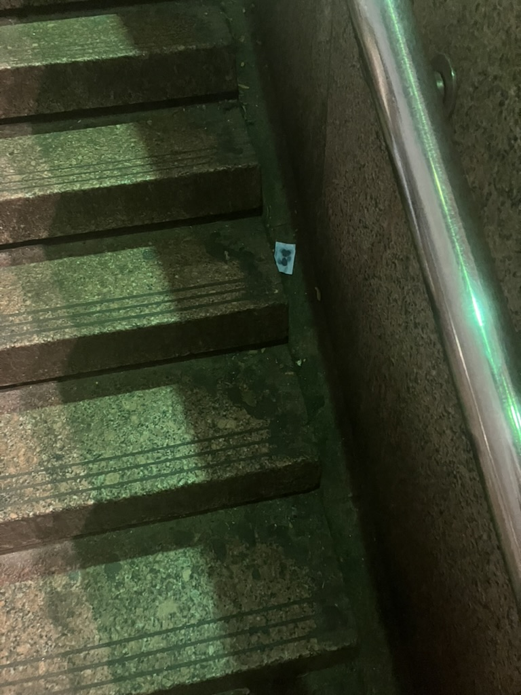

The call is in the name
Your data naming can protect the system. The name determines who is invited to share in the relation.
The incline
-
where it starts
Being exterior calls for belonging. Naming sets the foundation for change.
-
being measured
Measuring from a distance doesn’t lead to relation. Use feeling from inside instead.
-
opacity
The parts you don’t want to relate through can be codified away.
-
the incline
The coded name protects the relation from exteriority.

The labeled sequence is not an answer, but a pattern from what makes you different. Use it to choose your answer with your sensing.
the limits of this work
Every color, quaternion, and sequence on this page is a way of naming something, not measuring it. The goal throughout is accuracy of perspective — finding language that's honest to how a color, a feeling, or a traversal actually sits in relation to the others around it — not a claim that any of this identifies a true, fixed class. Where a figure looks like a classifier (a decision tree, a confusion matrix, a similarity score), read it as a description of closeness, not a verdict.
lossy by construction
Any centroid, cluster mean, or similarity-weighted blend of real anchors collapses information by construction. It's a legitimate way to explore where something sits; it is not evidence of what something is.
two geometries, two notions of closeness
The CIELAB ΔE confusion matrix and the Bloch-quaternion geodesic distance measure different things — perceptual difference versus hue-phase difference. Where they agree, that's meaningful convergence. Where they don't, that's the geometry telling the truth about what each metric can and can't see.
embedding is a proxy
Sentence-transformer similarity to anchor text carries its own training-data blind spots, and the deterministic word-overlap fallback is cruder still. Both stand in for semantic closeness; neither is semantic closeness.
memory choice changes the reading
The same traversal produces measurably different hidden-state trajectories under embedded versus delay memory. That divergence is reported directly rather than averaged away — a method that only shows its confirming half isn't nuanced, it's precise in disguise.
the sample is small
Fifteen colors, seventeen traversals, nine classification classes. Every pattern here is a real pattern in this dataset — not yet a claim about color, emotion, or wellness beyond it.
Don’t conflate paradoxes. Ambiguity should be preserved to address felt tension.
Color architecture can maintain linguistic relations to help you manage them.
precise vs. nuanced
A Color Indicator Model, aiming to create more nuance between different color classes, each of 16 colors forced into a single one-hot anchor — scored worst for prediction ability. A Random Forest reading the same colors as continuous, normalized RGB predictors, letting Orange and Brown sit very near each other in feature space instead of separating them, scored best. The confusions the precise model was penalized for — Blue↔Violet, Brown↔Red, Black↔Brown — turned out to be real, geometric, and predictable in advance from CIELAB distance alone. They weren't noise. They were the data telling the truth about how close those colors actually are.
ΔE → quaternion


Run the same nine classes through the Bloch-quaternion geodesic distance instead, and the picture doesn't confirm that ranking — it reorganizes it. Brown↔Orange, barely notable in CIELAB (ΔE = 79), becomes the single closest pair by a wide margin (4.0°). Black↔White, the most separated pair in CIELAB (ΔE = 162, the largest value in the entire matrix), collapses to 14.2° — among the closest pairs in quaternion space. Across all thirty-six pairs, the two geometries correlate at r = 0.07 — essentially no linear relationship at all.
- Brown ↔ Orange — ΔE 79 / 4.0°
- Black ↔ White — ΔE 162 / 14.2°
- Orange ↔ Red — ΔE 52 / 19.5°
- Brown ↔ Red — ΔE 44 / 22.5°
- Red ↔ Yellow — ΔE 118 / 24.5°
So the honest finding isn't "nuance survives a change of geometry." It's narrower and more useful: each geometry is nuanced about a different axis of closeness, and neither is nuanced about all of them at once.
creolization as rotation
Rotor-Invariant Shift Estimation (RISE) treats meaning-change across seven languages as a consistent rotation on a hypersphere, not a fixed vector — holding meaning across difference without collapsing every language into one code.
decision tree

Toussaint Louverture
Toussaint Louverture made revolutionary history by remembering to include his exterior, the French, in his sense of interiority, belonging. Use color the same way to find mutual belonging.

Sequences with repetition refuse a threat to closure. They emphasize what needs preservation.
This framing comes out of my CU MEDLab Community Fellowship work on governance in Haitian maroon communities.
Visit my method page and choose from my tools to guide your sense-making into next steps.
A mirror helps you feel what is behind you. Use color to sense the best path from your data.

Try my tools Start a conversation
Lineage
Concrete poets M. NourbeSe Philip, Madeline Gins, and Jen Bervin play with the exposed texture of meaning. Allison Parrish and Nick Montfort expose those textures through technology. I work between them.
Alongside: Rita Charon’s narrative medicine, Audra Simpson’s ethnographic refusal, and Karen Barad’s agential realism.
Sources
- Alonso-Sanz, R. (2015). On quaternion maps with memory. Complex Systems, 24(3), 223–233.
- Barad, K. (2007). Meeting the Universe Halfway: Quantum Physics and the Entanglement of Matter and Meaning. Duke University Press.
- Benjamin, R. (2019). Race after technology. Polity.
- boyd, d. (2014). It's complicated. Yale University Press.
- Charon, R. (2005). Narrative medicine: Attention, representation, affiliation. Narrative, 13(3), 261–270.
- Christian, B., & Griffiths, T. (2016). Algorithms to live by. Henry Holt.
- Costanza-Chock, S. (2020). Design justice. MIT Press.
- Deleuze, G., & Guattari, F. (1987 [1980]). A Thousand Plateaus. University of Minnesota Press. Plateaus 12 & 14.
- Federici, S. (2004). Caliban and the witch. Autonomedia.
- Freenor, M., & Alvarez, L. (2026). Mapping Semantic & Syntactic Relationships with Geometric Rotation. ICLR 2026 / arXiv:2510.09790v2 [cs.CL].
- Fricker, M. (2007). Epistemic Injustice. Oxford University Press. Ch. 7.
- Glissant, É. (1997). Poetics of Relation. University of Michigan Press. "For Opacity."
- Hazareesingh, S. (2020). Black Spartacus. Farrar, Straus and Giroux.
- Hickel, J. (2020). Less is more. Penguin Random House.
- Ingersoll, K. A. (2016). Waves of knowing. Duke University Press.
- Klein, L. F., & D'Ignazio, C. (2020). Data feminism. MIT Press.
- Métraux, A. (1959). Voodoo in Haiti. Oxford University Press.
- Noble, S. U. (2018). Algorithms of oppression. NYU Press.
- Russell, L. (2020). Glitch Feminism. Verso.
- Simpson, A. (2007). On ethnographic refusal: Indigeneity, “voice” and colonial citizenship. Junctures, 9, 67–80.
- Surov, I. A. (2022). Quantum core affect: Color-emotion structure of semantic atom. Frontiers in Psychology, 13:838029.
- Temkin, D. (2014), quoting Clement Valla, on the glitch as system logic, not intrusion.
- Wharton, K. B., & Koch, D. (2015). Unit Quaternions and the Bloch Sphere. arXiv:1411.4999v2 [quant-ph].
- Witt, J. K., & Warden, A. C. (2021). Better sensitivity to linear and nonlinear trends with position than with color. Journal of Vision, 21(5):12, 1–13.
- Zohar, D. (1989). The quantum self. Bloomsbury.
- Zuckerman, E. (2013). Digital cosmopolitans. W. W. Norton.
Currently under review with Northwestern University MS Data Science/AI Academic Innovation Research Consultation. Extends the conference thesis prepared for the CU Center for Media, Religion, and Culture's "Why We Come Together" (2026) with the color math that version does not carry.